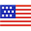

An official website of the United States government
This site is currently in alpha.
USAJOBS Design System
Setting the base visual language, components, and guidelines that help define the next generation of USAJOBS.
View the systemThis design system represents the start of the next generation of USAJOBS. A design system describes the base visual language, using UI elements and style guidelines, upon which the site can be built. It will also include examples and usage guidelines of new components.
Because the design system is brand new it also acts as a prototyping toolkit. This allows us to quickly explore new ideas in code and iterate on our designs. New projects within USAJOBS will leverage and potentially extend the design system further.
The USAJOBS design system starts with the U.S. Web Design Standards and extends them to meet the needs of the USAJOBS next generation project. This repo allows the team working on USAJOBS to:
- Document where we have intentionally deviated from an existing guildeline in the U.S. Web Design Standards and provide a platform for contributing back to those standards.
- Document where we have unintentionally deviated from an existing guideline in the U.S. Web Design Standards and want to track getting back inline with the standards.
- Design new components or elements that are not yet a part of the U.S. Web Design Standards. These components or elements may or may not be appropriate to contribute back to the standards given their potential for reuse elsewhere.